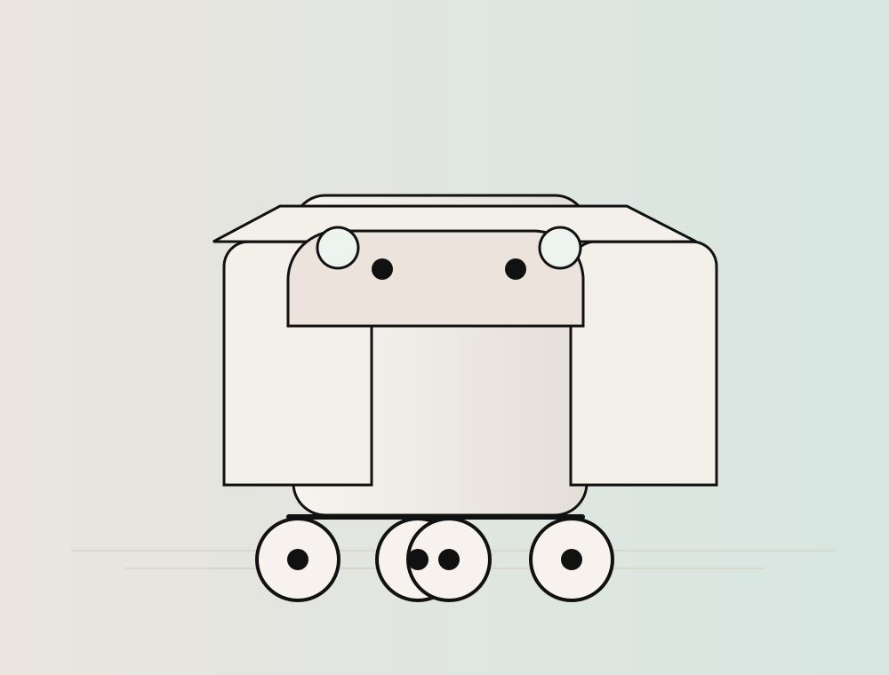
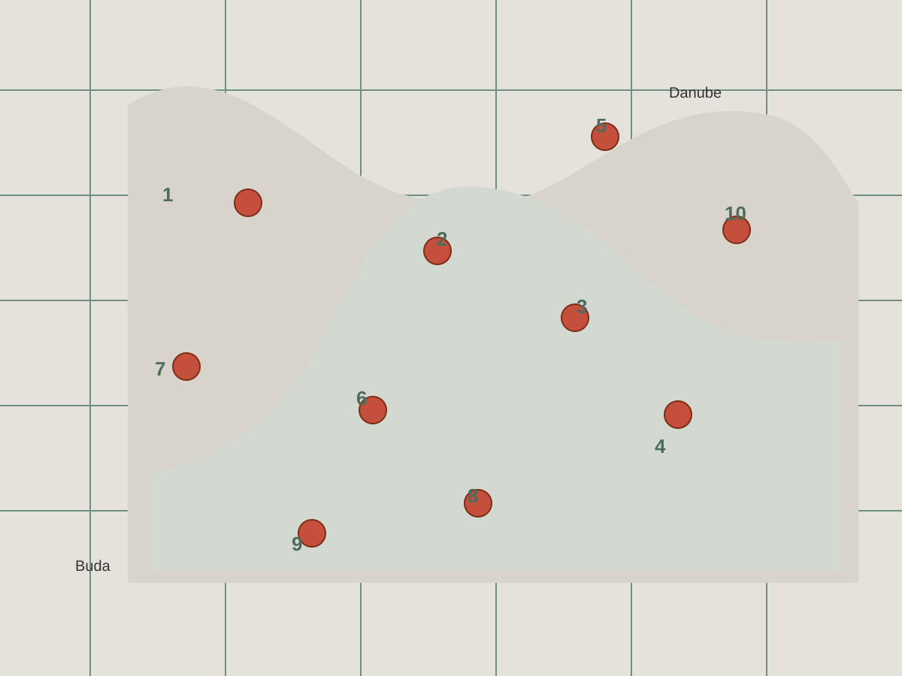
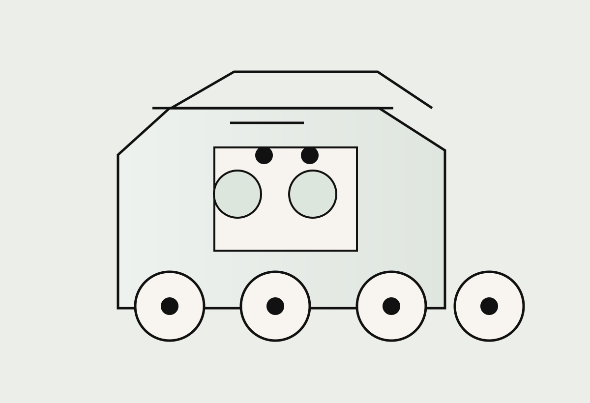

01
Starship
Six wheels, walking pace, remote supervision. Proof that small autonomous vehicles can share a pavement with people.
Logistics

Issue 01 — Street furniture
An autonomous litter bin. It sorts what you drop in, rolls to a hub when it is full, empties, recharges, then returns to its corner.
Fig. 0.1 — Front view, 90 cm to the roof
UTC 001
90 × 75 × 55 cm
05:00 — 23:00
Four, two a side
341kg
Waste that one person in Budapest produces every year. The city meets it with 14,000 public bins, and most of them are still the old green barrels.
Budapest has a litter problem that visitors notice before residents do.

Fig. 1.1 — Litter hotspots reported in Budapest, 2025
In a 2025 survey the city was ranked the dirtiest in the world. The complaints are specific: too few bins on the street, bins that overflow, and a party district that is hard to hold together at weekends. The most common objects on the pavement are bottles, plastic packaging and cigarette ends.
BKM, the municipal company, runs 11,300 of the 14,000 bins in the city. It announced a five year programme to replace 9,000 worn green barrels with larger, stronger ones. One year after that announcement, 54 had been swapped.
Separated waste is still 17% of the total, although the deposit return scheme brings back 88.8% of bottles and cans. The habit is there. The street furniture is not.
Figures from BKM and VG.hu, 2024 — 2025.
Ten streets that carry the complaint
People drop things because walking to the bin costs more than the drop.
The calculation
That is the utilitarian calculation, and it holds on almost every street in the city. Asking people to be less lazy is not a design brief. Making the bin worth walking to is.
The answer
So the object is not a container with a lid. It is a machine that answers back: it looks at you, opens, sorts what you give it, and leaves on its own when it is full. Cigarette ends are collected too, in a separate throat under the roof, because they are the most common thing on the pavement and they can be recycled.
01
A box with a hinged cover. Familiar and cheap, but the hinge is the first thing to go, and a lid left open is worse than no bin at all.
02
A hood over a throat, the shape the old barrels already use. Rain stays out, but nothing in it says the object is awake.
03
The body we kept. A closed volume on four wheels, opening in the top face, all the senses gathered under the roof.
Fig. 2.1 — Three bodies we modelled before settling on the third.

01
One vertical volume, 90 × 75 × 55 cm, with softened corners and a shell of white plastic finished to read as marble. Nothing on it is decoration.
02
The roof cantilevers forward and two lens rings sit underneath. This is the part that makes the object legible as a robot from thirty metres away.
03
The opening is a camera iris, not a lid. It opens as a hand approaches and closes behind it, keeping rain, gulls and smell out.
04
Four wheels, two per side, half hidden by the shell. Narrow enough for a pavement, stable enough for a kerb, and slow by design.
Fig. 3.1 — Unit 001, seen from the back left. Take the lens rings away and the object is a plain white box; the face is what does the work.
05 — The opening
The lid is an iris diaphragm, borrowed from a camera. Nine blades close to a small hole and open to the full width of the throat.
It is the only moving part a person touches, so it is the only part we over-built: no hinge to bend, no flap to jam, nothing to force.
Two lens rings and one light are enough for a person to understand what the bin wants, without reading anything.
Idle on its corner, light at twenty percent. If nobody comes near for a few minutes it drifts a few metres to where people actually are, then waits again.
A person inside two metres. The light turns green and the iris starts to open before the hand arrives. This is the only invitation the object gives, and it is enough.
Something is dropped into the throat. A camera classifies it in half a second while the blades stay open; the rim runs orange until the decision is made.
The item is tipped into one of two compartments and the light answers with a single green pulse. If it is in the wrong place, the roof screen says where it belongs.
The bin does not need the night shift. One daylight shift keeps the battery small and the streets quiet, and there is always a unit on station when the city wakes up.
05:00
Full charge, bag empty, route loaded. The first stop is the square.
09:00
Morning peak. It stays where the footfall is instead of walking a loop.
16:00
Full, or below a quarter of a charge. It picks the nearest free station, not the assigned one.
23:00
Emptied, compacted, charging. One supervisor clears the fault list for the zone.
A camera sits at the throat above the blades. It reads shape and material, then a servo tips the item into the recyclable or the residual side. It never sees a face, only what a hand lets go of.
Two compartments are deliberate. More categories need more room than a pavement allows, and four wrong labels are worse than two right ones.
Both bags hang from the same frame and lift out through the back. The opening stays at ninety centimetres, high enough that nobody has to bend to use it.
Nothing is crushed inside the bin. The unit stays light, the bag is changed by a person at the hub, and the mechanism that could jam never sits on the street.
01
Six wheels, walking pace, remote supervision. Proof that small autonomous vehicles can share a pavement with people.
Logistics
02
A camera sorts waste into four streams. We kept the sensing and replaced the moving flap, which is the part that fails.
Sorting
03
Service robots already go back to a base to empty and charge. The hub model is only new to waste.
Service
Three problems have nothing to do with the shape of the object and everything to do with whether it can exist on a street.
A
No new buildings. Empty, abandoned or never finished buildings become hubs: emptying, charging, maintenance and high density compaction, with one supervisor for each zone.
B
A bin cannot pick up litter. Street cleaning and collection stay as they are, emptying crews move over to cleaning, and new jobs appear in remote monitoring and support.
C
Hungarian traffic law has no category for an autonomous street device. GDPR needs a lawful basis for camera data and the civil code applies strict liability to increased danger. Our answer: nothing recorded, faces and plates blurred on board, a hardware kill switch, soft bumpers, and a pilot under special permit.
The first step is a proposal to the city council. Everything on this page is a concept: not built, not tested, not deployed.
A bin that behaves like a machine and reads like a face. That is the whole idea, and it only works because the object is allowed to be a little strange.
Concept design
Fülöp-Sala Balázs
Henrique Ferreira
Duan Hongwei
Year
2026
Budapest